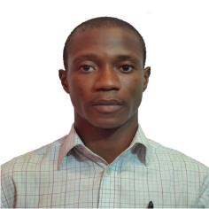

MY RESUME

Summary
Ambitious graduate Developer with excellent work experience, a determined and focused professional with a passion for creating sustainable and scalabe web solutions.
Key expertise lies in software engineering, network engineering and cybersecurity analysis and implementation.
I build innovative software solutions working closely with Product Managers and Program Managers during the full lifecycle of a product or service including ideation, design, development, testing, deployment, maintenance, and reporting. My responsibilities typically include:
- Apply engineering principles to complex problems through sound and creative engineering.
- Work in a cooperative team environment to deliver software on time that follows internal and industry best practices.
- Learn and adopt relevant new technologies, tools, methods, and processes.
Education
- B.Engr. (Hons) in Electrical & Electronics
Engineering First Class Honors.
-
Niger Delta University, Wilberforce Island. Bayelsa State.
- 2019
- WASSCE in Sciences
-
Pacesetters Missionary College, Oyigbo. Rivers State.
- 2009
- First School Leaving Certificate (FSLC)
-
Radiant Way Int'l School. Port Harcourt, Rivers State
- 2003
Work Experience
- Transmission Implementation Engineer( Core Network).
-
MainOne Cable Limited - an Equinix Company
-
August 2023 – present day
Responsibilities:
-
- Troubleshooting and resolution of 1st and 2nd level network related problems
- Respond to and resolve DWDM & Metro networks issues within the timeframe of severity level agreements
- Review and execute RPRs (re-provision requests) on Ciena DWDM Submarine and Metro Network, Huawei SDH platforms with minimal supervision
- Support all aspects of the network management process assuring requests, implementation, and problems are delivered as required with no impact to the global communications
- Deploy and document changes in accordance with problem and change management process
- Participate in managing projects introduced by engineering team assuring full implementation and documentation standards are adhered to
- Complete the projects objectives within timelines
- Interpret, review, and implement Metro Ethernet and GPON networks designs from the core network planning team
- Perform most effective approach to restore, recover, or alter configurations, logical or physical, to maintain service integrity
- Ensure that MainOne’s global and metro fibre network documentation is always accurate and up to date.
Graduate Trainee (Technical Track).
-
MainOne Cable Limited - an Equinix Company
-
July 2023 – August 2023.
Responsibilities:
-
- Partook in training on MainOne’s networking overview.
- Partook in trainings on leadership, Microsoft Office technologies such as MS Word, MS Excel and MS Power point.
Undertook trainings on soft skills such as Effective Listening, Emotional Intelligence, Selling techniques.
- Development and presentation of project on a solution design to provision traffic to the last mile network of a proposed client.
Proposal Sales Engineer
-
Yokogawa Nigeria Limited, Lagos.
-
May,2022 – July, 2023.
Responsibilities:
-
- Depicting the RFQ and preparation of Offers. Basically, read the customer RFQ, understand the
requirement, generate appropriate Model Nos as per customer requirement and submit
proposals.
- Follow Up with customers for Offers submitted to convert RFQ / Opportunity into Order for
Service Business.
- Ensure achievement of YMA NG PCI Business Target for the Financial year.
- Read the Yokogawa Standard Terms and Condition of Sales and Service, understand it and utilize
it on the proposals.
- Understand the Global Account – Chevron, Shell, Total & Exon Mobil pricing structure, terms and
condition and submit the proposal according to the Agreement.
- Gather Knowledge on Yokogawa Process Control Instruments (Transmitters, Flow Meters,
Analyzers etc.) through formal training and be ready to submit offers.
- Learn Yokogawa Sap System & CRM System and utilize the same in preparation of Proposals.
- Support Order Processing Team in processing of Orders.
- Support YMA NG PCI Sales team to generate the business as per the target assigned for YMA NG
FSD Teams.
- Ensure meeting the KPI set
Intern.
-
Yokogawa Nigeria Limited, Lagos.
-
October,2018 - February,2019
Responsibilities:
-
- Undertook trainings on Yokogawa’s proprietary distributed control system ( CENTUM VP ) and safety control system (ProSafe RS).
- Applied my training to building of a software solution for the control of fluid flow in a plant.
Skills
- Full stack web developer
- Cisco Certified Network Associate
- Effective communication in Oral & Written English
- Project Multitasking with minimal supervision
Awards & Certificate
- Member Institute of Engineers and Technologists (MIET).
- Certified in Cybersecurity by International Information System Security Certification Consortium (Certification Number: 1539239).
- President of Niger Delta University (NDU) Chapel. 2018 -2019
- First Class Honors in Electrical & Electronics Engineering
- Best Graduating Student from Electrical & Electronics Engineering Department, Niger Delta University, Bayelsa State.(2018/2019 academic session)
- Chairperson, Institute of Electrical & Electronics Engineering NDU Student Chapter.
My Hobbies
Contact Me